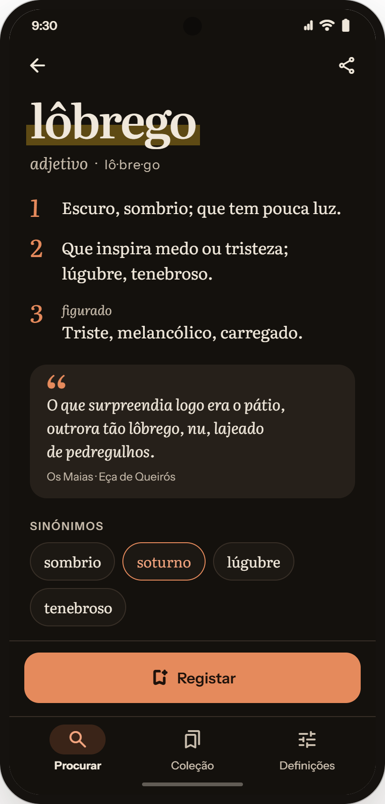
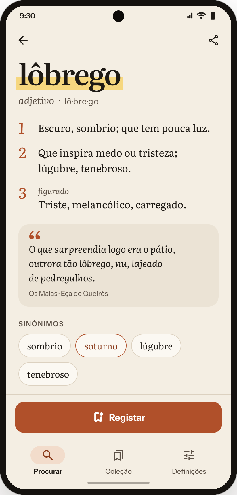
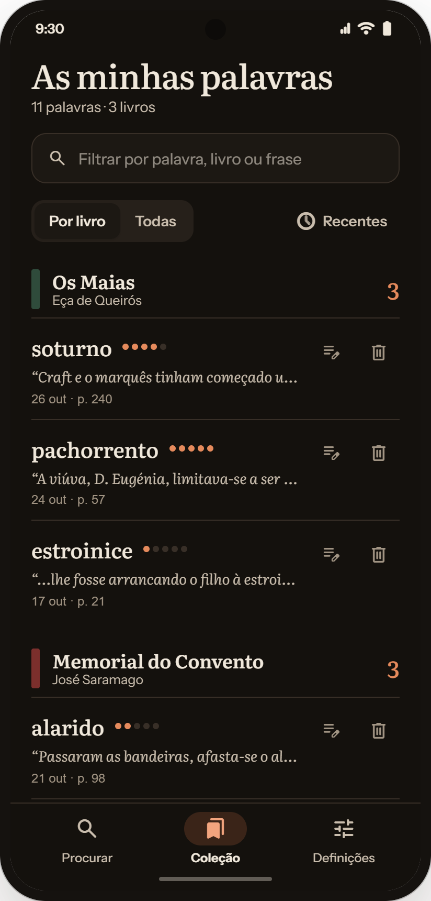
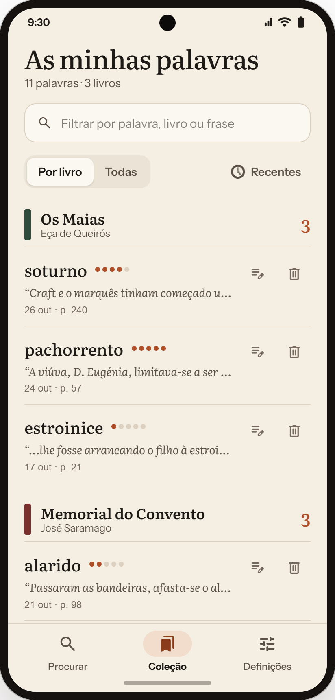

Um dicionário para quem lê em português.
Encontras uma palavra que não conheces a ler um livro. Pesquisa-la, vês o significado e frases de exemplo, e guarda-la na tua coleção — com o livro e a frase onde a encontraste. Um jogo diário e discreto traz as palavras de volta, para não as esqueceres.
- Funciona sem Internet
- Sem anúncios
- Sem rastreio
- Código aberto




palavra-me
O nome vem da forma enclítica portuguesa (lembra-me, ensina-me): nomeia o gesto que se repete, não o objeto.
Porque é diferente
O dicionário inteiro vive dentro do telemóvel. A app não tem sequer permissão para aceder à Internet — nada do que registas sai do teu dispositivo, e isso é uma garantia que se pode verificar, não uma promessa. É construída a partir de fontes abertas do português, e tanto o código como os dados são livres.